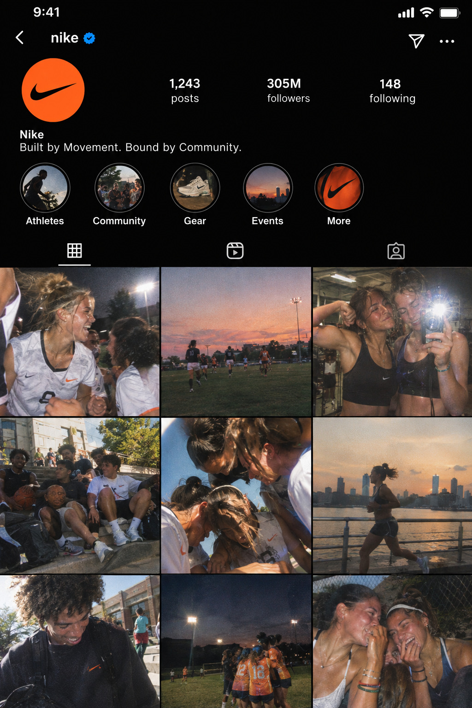
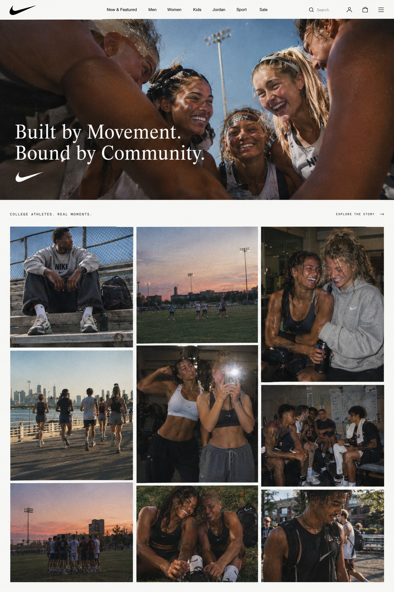
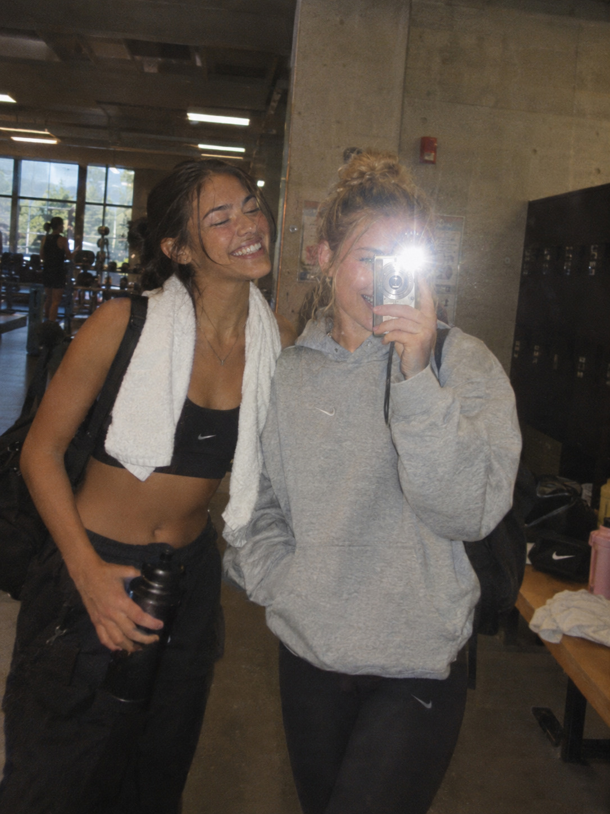

PRIMARY CHANNEL
Native Instagram Reels featuring raw, unedited vertical videos and highly unretouched carousel posts of real local fitness groups.
SOCIAL / DIGITAL / PHYSICAL / COMMUNITY
BUILT BY MOVEMENT. BOUND BY COMMUNITY.
The idea is to connect the broad scope of Nike athletes with each other and with the brand.
Real images. Real videos. Real athletes.
Displaying real content gets customers excited to be showcased on the Nike website and Instagram. Most importantly, it inspires consumers to go out, exercise, and create memories with their community.
PRIMARY CHANNEL
Native Instagram Reels featuring raw, unedited vertical videos and highly unretouched carousel posts of real local fitness groups.
SECONDARY CHANNEL
Native user-generated content blocks on Nike.com collection pages and interactive digital community challenges integrated into Nike Run Club.
PHYSICAL TOUCHPOINT
Discovery-first lounge spaces become physical extensions of the campaign, connecting digital submissions to real community participation.
CONTENT_FILE_02 / BRAND VOICE
The campaign should feel accessible rather than elite or intimidating.
Leave room for imperfection. The language should feel lived-in rather than overly polished.
Copy supports candid moments instead of turning every image into a traditional advertisement.
Write like the campaign is documenting a real moment as it happens.
Movement becomes a reason to connect, participate, recover, laugh, and come back tomorrow.
“new shoes, new pr, old friends.”
“my power is from my people. sunrise to sunset.”
“i can’t help but feel motivated when they’re around.”
“josh said he knew a spot, ended up on a 3 hour hike at 7 AM, wouldn’t change a thing.”
“sunday morning run club photo dump 📸. nobody kept pace, everyone stopped for iced coffee halfway through, 10/10. tag your morning crew.”
“oversized hoodie + vintage sneakers for a 20-minute jog, then straight to the library. keeping it simple.”
Short, direct campaign language keeps the message focused on participation rather than performance. The headlines position athleticism as something accessible, social, and already present in everyday life.

The campaign phrase “Everybody, Every Body” can extend beyond copy into a recognizable music and media cue through Black Box’s “Everybody Everybody” (Black Box, 1990).
The song creates a playful connection between the campaign’s language and a recognizable piece of early-1990s dance culture. Its upbeat energy fits montage-style edits of consumer submissions: running, hiking, dancing, pickup games, workouts, recovery, and everyday moments with friends.
Rather than treating the song as background music for a polished commercial, it becomes a cultural thread connecting many different bodies and forms of movement in one community montage.
▶ LISTEN TO “EVERYBODY EVERYBODY”
Selected customer content can move from social media into native user-generated content blocks across Nike.com, extending the campaign beyond a temporary social post.
The campaign can showcase hundreds of submissions from different athletes, ages, movement styles, and communities.
Being featured creates a reason to participate while reinforcing the campaign idea that Nike’s athlete community is much broader than professional sport.

The Urban Outfitters “On Rotation” community lounge becomes a physical extension of the digital campaign. Select locations can feature community boards where customers pin real Polaroids, digital-camera prints, and photographs of themselves moving with friends.
The low-lit, discovery-first environment fits the campaign’s physical-media and Y2K aesthetic while bringing Nike into a space where the target audience already shops and spends time.
The board can be updated monthly and documented through a dedicated Instagram Highlight, allowing the physical activation to continually feed content back into Nike’s digital channels.
Submit your personal fitness triumphs — or fails — to Nike Run Club or Nike.com to be featured as one of our many athletes.
Take a candid photo or video of movement with your community.
Send it through Nike.com, Nike Run Club, or the link in the Instagram bio.
With permission, selected submissions tag the athlete when published.
Digital content becomes a reason to join local movement and community.
POST → SHARE → SHOW UP → MOVE → REPEAT